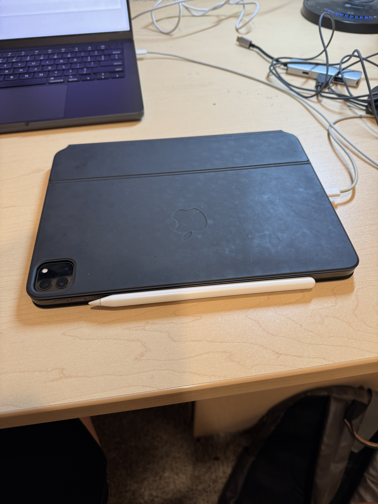

Background of the project:
In this project, we are asked to take the pictures that we like ourselves, and then warp one of the image into the other using the Homography computed by the chosen correspondeing points. And then blend/stitch the image together to get a mosaic of the images.
Part 1. Take the picture you like
This seems like an easy task, but this task is really the root of having a good results. There are several things that you need to be careful when taking the picture:
- When you take the pictures, you need to make sure that all the pictures that you take have the same center of projection (COP). So when you take the pictures, you need to rotate your camera base on the axis of where the camera located. Not where you are standing, not the middle of the phone.
- The pictures that you take should have 40% ~ 70% of overlap between each consecutive picture for enough correspondency and easier registration
- It is best to take pictures of stationary scene, if you want to take picture of something moving in the scene, try to take each consecutive picture as fast as you cn to minimize the movement in each picture. One exception is that you want the effects for artistic reason.
Some Examples:
.jpg)


Part 2. Defining Correspondences
Just like what we did in project 3. In order for the warping to work, we
need consistent labeling point on both images. Which we need to define
the correspondence manually on different items and elements in the
images
In this case, I tried to use barebone
ginput()
funtion at first, which works fine and it only required several lines of
code. The problem is, you will need to redo the whole choosing process
if you make mistakes in the middle. And you also need to write extra
code to save the correspondeing points into a json file for future use.
So I instead just used
this
labeling tool that is provided in the project 3 assignment specs for
labeling the correspondence. And it provide the feature that allow the
users to delete any points they chose during the choosing process, which
is really convenient. It automatically save the correspondeing points
into a json file as well.
Note: For the next part, you need to choose at least 4 points to compute the Homography. And if you are taking your picture using iphone, which I did. I will suggest you should shrink the image for choosing points and for later warping and blending as well. This is because the original picture taken by iphone is too big, it will then cause your warping and blending a lot of time.
Suggestion: Generally. more correspondency is better. But if you have some good pictures for easy registration and correspondency, you can still get a good results with less points (at least 4!)
Corresponding Points Examples:
.jpg)
.jpg)
Part 3. Compute Homography
How can we warp one image into alignment of the other image? Which we will need to compute the Homoraphy between 2 images' correspondency that we chose in the previous part. Where H (Homography) is a 3 by 3 matrix with 8 degree of freedom (last element is scale). Here are the hand written notes of mine about how to compute the Homogeaphy base on the correspondency points:
Homogeaphy details:


After you have the above equations setup, you can solve the matrix easily by using least square solution
Note: We can now see why we need at least 4 correspondencies to solve a homograhpy. And the above equations are only for 1 correspondency. For more Correspondencies, just stack more left most matrix with different x1, x2, y1, y2 vertically.
Suggestion: For sanity check, you can call one of the functions that is prohibited (ex. cv2.findHomography) as stated in project spec to see whether the H you computed is correct or not. It is normal that the results you have will be a little different than the one you get from the function. But don't worry about it if it is really small.
Part 4. Warp Image
Now we know how to compute the Homography, we can use the Homography that we computed to warp an image to the reference image. Here are my hand written notes about how to wap image:
warping details:


Note: In the warping function, whenever you apply homography or inverse homograhpy, you need to devide the warped coordinates by the corresponding scale w (which is the w shown in the above homograhpy section).
Suggestion: Just like the homography, you can call something like cv2.warpPerspective for sanity check. Which the result may be different because the function may cut off the image if there are negative coordinates after warping. But the function I implement shows the whole warped image
Part 5. Image Rectification
Here comes the part where you can test whether your code for homograhpy and warping are correct or not (if you didn't use the sanity check). What we need to do here is bascially take a picture with some rectangle objects in the scene and define a rectangle area by yourself so that you can compute the homography base on the points you choose around the rectnagle objects in the scenes and the rectangle area you define yourself (I used [[0, 0], [200, 0], [200, 200], [0, 200]] here myself).
My result:
Original Image:
Rectified Image:

Original Image:

Rectified Image:

You can now observe that, the result image is just like looking right into the object instead of from the side in the original image.
Note: If your result image is not stable or not good enough, you can try to choose more points on the rectangle instead of just using the 4 corners like I did. And if your original image is taken from a really off angle, your result image will look good only in a small portion of the image, all other parts will look really stretched. You can crop the image for only the good part for the result.
Suggestion: if you know your original rectangle object's shape (height, width proportion), you can also define your rectangle into the same proportion for a better result (like instead of using a 200 * 200 square, I should probably use some other rectangle shape if I kow the exact proportion since ipad is not a square, but this is not requied).
Part 6. Blend the images into a mosaic
After you got your rectification working, which means your codes for homograhpy and warping are working as well. We can now get into the main idea of this ptoject (project 4a), which is image mosaic. The idea is really easy, you first warp one image to the reference image. and blend the warped image and the reference image into a big mosaic. The idea of warping image is the same as image rectification, but instead of using a rectangle that you define yourself, you use the correspondency points to compute homography. And for the blending part, I just use my code from project 2 and tweak it a little to blend the image using the mask I create.
My result:
Original Image 1:
Original Image 2:
Blended Image:

Original Image 1:
Original Image 2:
Blended Image:

Original Image 1:
Original Image 2:
Blended Image:

Note: Since when we warp one image to the reference image, there are some translation happening (like mentioned in the above section). We need to keep track of that translation and apply that to the reference image as well when perform blending.
Suggestion: Although alpha blending (channel) is also mentioned in the project spec, I think Laplacian pyramid blending generally performs better for blending and easier to implement since you have went through that already in project 2. You probably just need a little modification in the code.
Some general Q & A about Blending
Q: How do you define the overall output size for the mosaic?
A: Which is a really similar idea as how you determine the ouput size for a warped image. But in this case, instead of considering only 4 warped points (corners) of the warped image, you need to consider the translation and the 4 points (corners) of the reference image as well. Here are some example pictures:
Example points you need to consider for the ouput mosaic size:


Just like image warping, you now find the min_x, min_y, max_x, max_y using all the points and define the output mosaic size.
Q: How do you create the irregular mask for blending?
A: For this part, I personally think it is a little bit hard to understand. But in general, we need to use some method like cv2.distanceTransform() to get the distance transform for both pictures. And use them to create the mask by comparing 2 distance transform image.
Example distance transform images:
Example masks for blending


What we do here is bascially just compare the 2 distance transform image to create the masks. At a given pixel, if distance transform on the left is greater than the distance transform on the right, we assign the the mask pixel to be 1, otherwise 0. The other mask the same lgoic, but for distance transform on the right is greater than the left. After you get the masks, you can assign one of the mask to be the reverse mask in Laplacian blending, and blend them exactly like how we did in project2.
Note: As you can see, the distance transform image is based on the entire output mosaic size with only one of the image instead of just the images itself. The original images that you feed into cv2.distanceTransform() should be something like this for creating the mask.